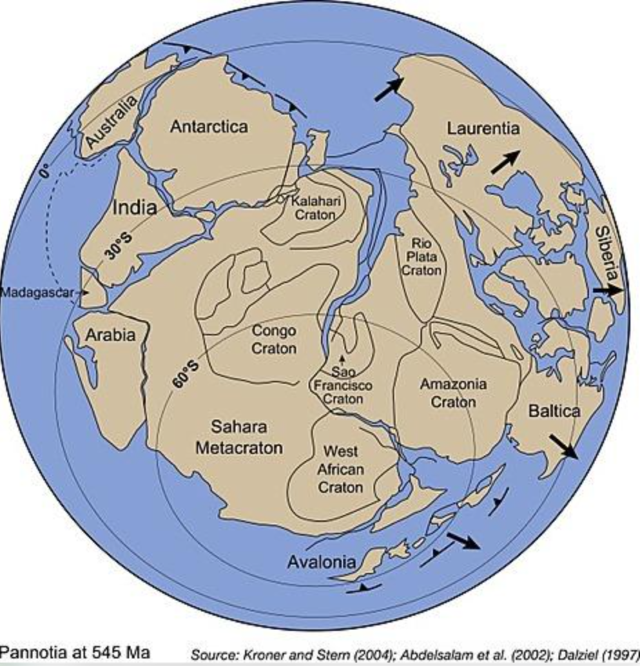

Pannotia
Hace aproximadamente 600 millones de años, la distribución de las masas continentales pudo atravesar una etapa de gran concentración. Algunos modelos científicos proponen que varios bloques continentales llegaron a formar un supercontinente conocido como Pannotia, durante el Neoproterozoico tardío.
Sin embargo, su existencia como una masa continental claramente unificada sigue siendo debatida. A diferencia de otros supercontinentes antiguos, las pruebas disponibles no permiten establecer con certeza que todos los bloques propuestos estuvieran unidos al mismo tiempo.
Después de Rodinia
La fragmentación de Rodinia transformó la distribución de las tierras emergidas y abrió nuevos espacios oceánicos. Los bloques continentales continuaron desplazándose, chocando y reorganizándose mediante la tectónica de placas.
Durante este proceso se desarrolló el ensamblaje de Gondwana, una extensa masa continental formada por bloques que hoy integran partes de África, Sudamérica, India, Australia y la Antártida, entre otras regiones.
Algunas reconstrucciones incluyen a Laurentia, el antiguo núcleo geológico de gran parte de Norteamérica, y a otros bloques en una configuración denominada Pannotia. Las posiciones exactas y el grado de conexión entre estas masas continúan siendo investigados.
¿Cómo se investiga Pannotia?
Los científicos no cuentan con un mapa directo de este posible supercontinente. Evalúan diferentes tipos de evidencia para determinar si las masas continentales estuvieron reunidas:
- Geocronología: permite determinar cuándo se formaron minerales y rocas relacionados con antiguas colisiones.
- Paleomagnetismo: aporta indicios sobre las antiguas posiciones y orientaciones de los continentes.
- Cinturones orogénicos: conservan señales de colisiones entre bloques continentales.
- Registros tectónicos: ayudan a identificar episodios de ensamblaje, extensión y separación continental.
Un supercontinente en debate
Una de las dificultades principales es que algunas colisiones asociadas con la supuesta formación de Pannotia parecen haber ocurrido en momentos diferentes. Esto plantea una pregunta fundamental: ¿se reunieron las masas continentales en un supercontinente definido o atravesaron una reorganización prolongada sin formar una única unidad global?
Hay investigadores que defienden la existencia de Pannotia apoyándose en evidencias tectónicas y en patrones geológicos de alcance global. Otros consideran que las pruebas todavía no demuestran una fase clara de ensamblaje y posterior ruptura.
El mundo del Ediacárico
La época en la que se propone Pannotia coincide con el Ediacárico, un período de la historia terrestre anterior al Cámbrico. En sus rocas se conservan algunos de los registros más antiguos conocidos de organismos multicelulares de gran tamaño.
Los cambios en la configuración continental pudieron influir en la circulación oceánica, el clima y los ciclos químicos. No obstante, la relación entre esos cambios y la evolución de la vida es compleja y no puede explicarse únicamente mediante la existencia hipotética de Pannotia.
¿Por qué es importante?
El debate sobre Pannotia ayuda a comprender cómo se reconstruye la geografía de la Tierra profunda y cuáles son los límites de la evidencia geológica. También plantea una cuestión central: cómo se enlazan la fragmentación de Rodinia, el ensamblaje de Gondwana y la evolución posterior de los continentes.